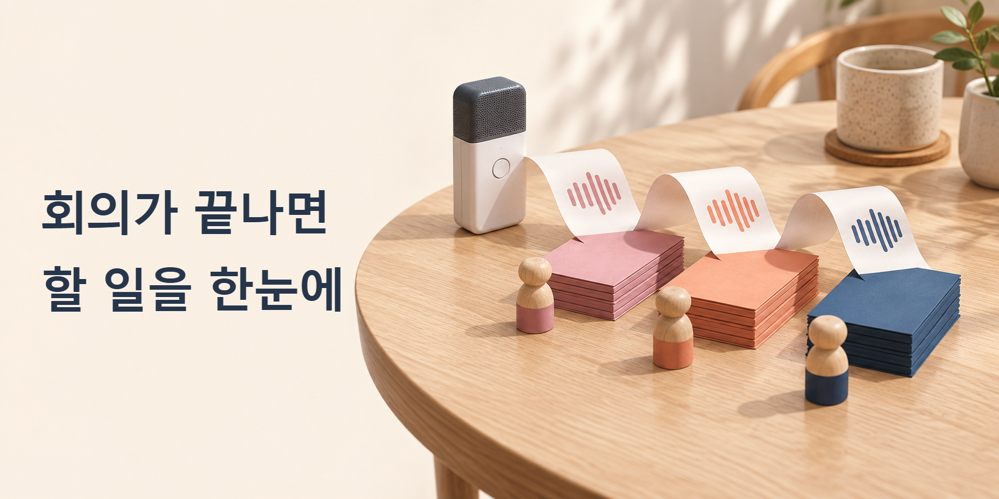

AI 배우기
누를 버튼과 입력할 문장, 결과를 확인하는 방법까지 차근차근 따라갑니다.
AI 배우기 · 제미나이
일정 조건과 결과를 직접 대조하며 AI 답변에서 놓치기 쉬운 오류를 확인합니다.

AI 배우기 · 회의 정리
예제 회의를 넣고, 입력할 문장부터 원문 대조까지 차근차근 따라갑니다.
AI 배우기 · 엑셀
문의 목록을 표로 정리한 뒤 누락·중복·분류 오류를 원자료와 확인합니다.